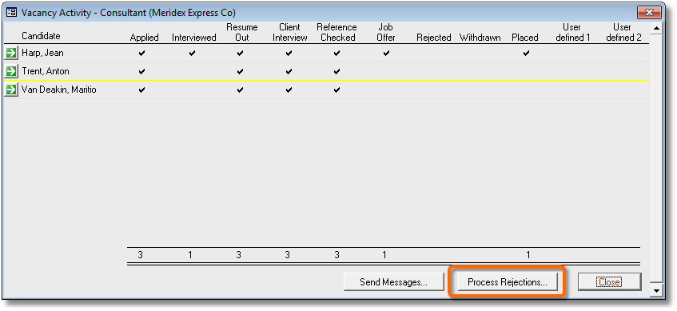
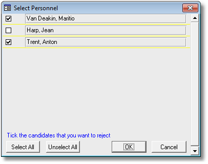
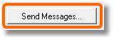
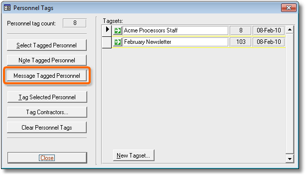
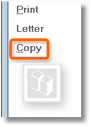

|
|
PRS News & Tips | February 2010 |
Latest News
We’ve just released PRS 8.0.1 — this includes a major update for users of the Roster system as well as a new integrated Message Merge tool and a vacancies rejections manager.
This screen-shot shows the Message Merge tool being used to Email unsuccessful applicants.
See Tips and Tricks below and our updated PRS Version 8 web page.
To download and upgrade go to the Installing the Latest PRS Client section on our Updates web page and follow the instructions.
For a full list of the changes and bug fixes since the previous release see the PRS Changelog web page.
Tips and Tricks
Notify all unsuccessful applicants with a click of the mouse
One of the most onerous and time consuming tasks faced by recruiters is notifying unsuccessful candidates. In the current market dozens of unsuccessful applicants per vacancy are common. The PRS solves this problem with a few mouse clicks.
Take the most common scenario: you’ve just filled a vacancy and need to to notify all the unsuccessful candidates — here’s how:
-
Open the Vacancies form and go to the vacancy you want to process.
-
Go to Page 2 of the Vacancies form and open the Activity Manager (by pressing the button labeled Activity Manager).
-
Press the Process Rejections button on the Activity Manager.
 -
Confirm the candidates you want to reject — the PRS figures out exactly which candidates have yet to be rejected, but you can override the choice by ticking or unticking anyone in the list.
 -
Lastly you are given the option of sending an Email or SMS message to rejected candidates using the Message Merge tool. Notice how the PRS has automatically used the Rejected Mail Template as the message boilerplate (though you are free to override this with your own choice of message).
Send Email and SMS messages to vacancy candidates
Use the Send Messages commands on the vacancy Activity Manager, Roster Tool and Vacancy Roster to quickly send an Email or SMS message to selected candidates using the new Message Merge tool.

-
Use the Send Messages button on the vacancy Activity Manager (open using the Activity Manager button on Page 2 of the Vacancies form) to send a message to all candidates or based on candidate vacancy activity.
-
The Send Messages buttons on the Roster Tool (open using the Tools→Roster menu command) and Vacancy Roster (open using the View/Edit Roster button on Page 1 of the Vacancies form) are used to send a message to all candidates in the selected roster entries.
Send Email and SMS messages to tagged Personnel
-
Go to the Personnel form and tag the people you want to message; then click the Tags command.

-
Press the Message Tagged Personnel button to bring up the Message Merge tool.

Maximise long lists to full-screen
When working with long lists of mail messages, roster entries and reminders, it’s much easier if the list occupies the entire screen.
The following floating windows can be resized and maximised to full-screen: Roster Tool, InBox Tool, Messages Tool, Reminders, Unpaid Invoices.
Just click the window maximise button or double-click the window title bar.

Clone existing invoices
Use the Copy command on the Invoices form to create a new invoice with same invoice details as the currently displayed invoice.

Need help?
-
Our Support web page explains how to get answers to PRS questions and includes links to articles on Maintaining Database Reliability and Performance and PRS Best Practice Deployment.
-
Don’t forget to check out our PRS Training Videos.
|
Important
|
If you no longer wish to receive this newsletter please email support@methods.co.nz with the word UNSUBSCRIBE in the subject line. |